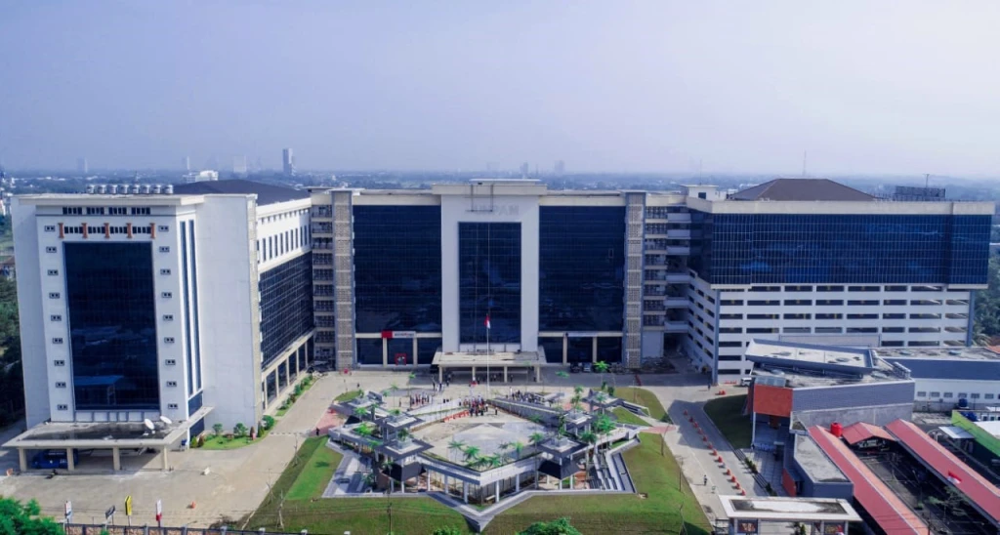

Universitas Pamulang didirikan pada tahun 2000 oleh Yayasan Prima Jaya yang diketuai oleh Drs. Wayan. Namun karena berbagai kendala dan tantangan yang tidak mudah dalam pengelolaannya, maka kepemilikan dan pengelolaannya dialihkan kepada Yayasan Sasmita Jaya pada awal tahun 2004 yang dipimpin oleh Dr. (HC) Drs. H. Darsono. Setelah berganti manajemen, maka berganti pulalah tujuan yang ingin dicapai oleh Universitas Pamulang, yaitu mewujudkan suatu pendidikan yang murah dan terjangkau oleh seluruh lapisan masyarakat tanpa melupakan kualitas.
Universitas Pamulang menyediakan pola perkuliahan blended, yaitu perpaduan antara perkuliahan tatap muka dan online dengan perbandingan 60 persen tatap muka, 40 persen online, didukung oleh berbagai macam fasilitas seperti, ruang perkuliahan ber-AC, laboratorium, perpustakaan baik cetak maupun e-book, auditorium, teaching industry, dll.
Dengan terselenggaranya pendidikan murah di Universitas Pamulang, kami berharap semua lapisan masyarakat di Indonesia dapat menikmati pendidikan di bangku kuliah, sehingga dapat menurunkan tingkat kebodohan dan kemiskinan serta meningkatkan daya saing dan martabat masyarakat Indonesia.